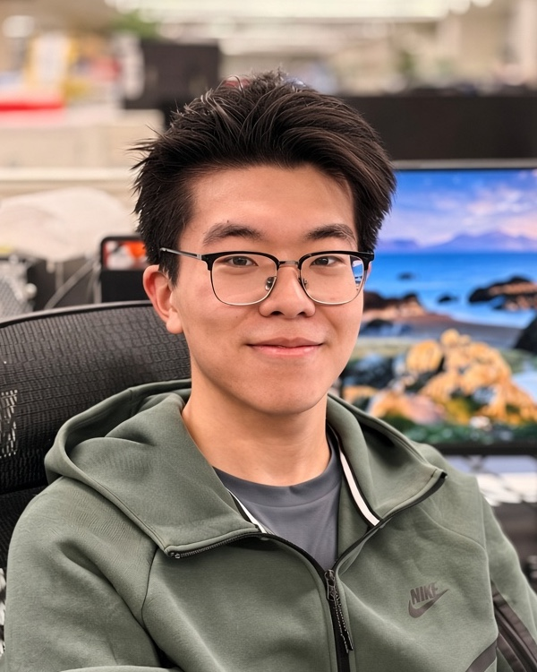

Ruihan Wu

I am currently a full-time research assistant at Sun Yat-sen University, where I am fortunate to be advised by Dr. Hanhui Li and Prof. Xiaodan Liang. Previously, I received my B.Eng. from Sun Yat-sen University.
My research lies in robot learning and dexterous manipulation, aiming to build robots that reason and act the way people do. In particular, I focus on tactile learning, from touch-guided action to unified representations across heterogeneous tactile sensors.
news
| Nov 16, 2026 | Wrapped up ! 🎉🤖 Take a look at the project page. |
|---|---|
| Jun 22, 2026 | Graduated from Sun Yat-sen University 🎓 |
| May 2026 | Joined the HCP Lab at Sun Yat-sen University as a full-time research assistant 🦾 |
selected publications
-

 Manuscript under review, 2026
Manuscript under review, 2026